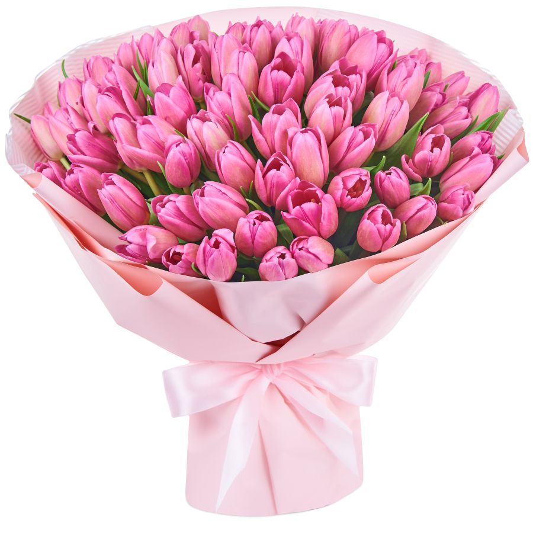

Тюльпаны
- Тюльпаны - одни из самых моих любимых цветов
- Центр происхождения и наибольшего разнообразия видов тюльпанов — горы северного Ирана, Памиро-Алай и Тянь-Шань. За 10—15 миллионов лет эволюции тюльпаны расселились до Испании и Марокко на западе, до Забайкалья на востоке и до Синайского полуострова на юге.
- 